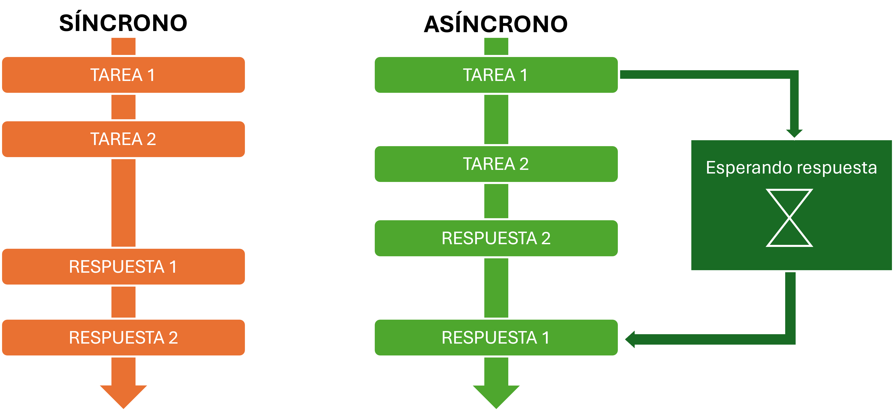
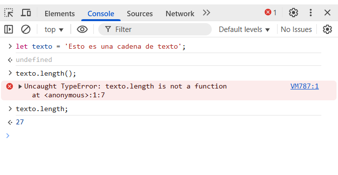
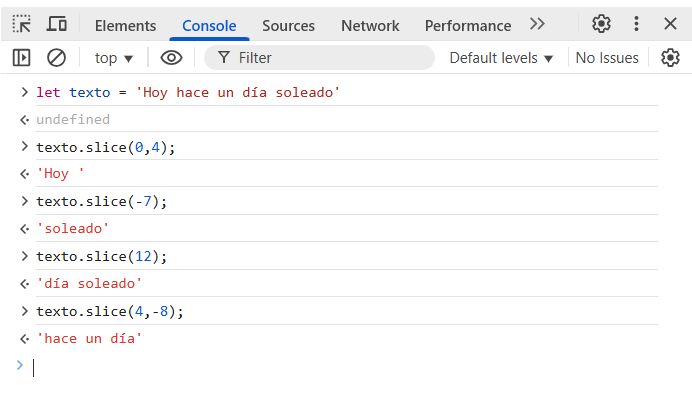
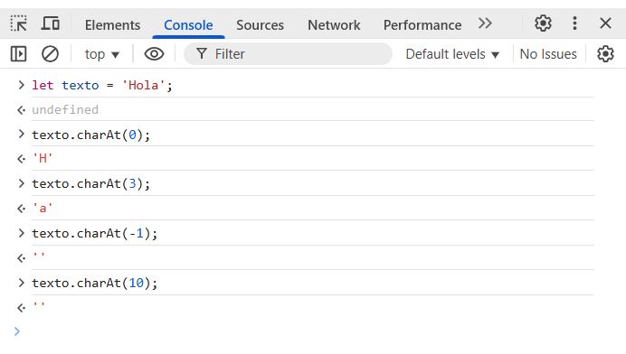
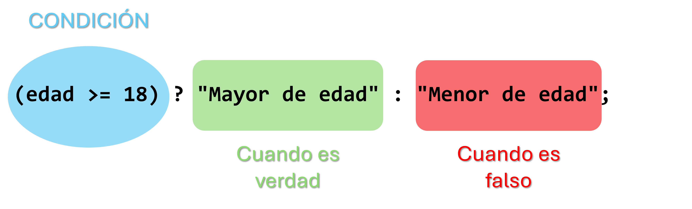
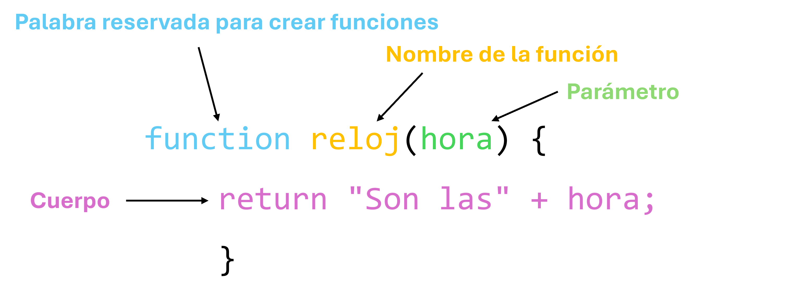
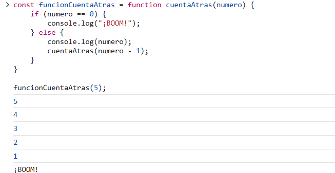
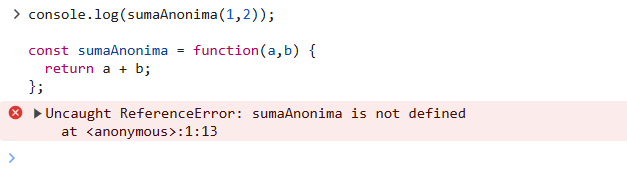

1. ¿Qué diferencia a Javascript de cualquier otro lenguaje de programación?
¿Por qué aprender JS?
Vamos a comenzar analizando por qué JS es un lenguaje que vale la pena aprender.
La principal razón es que es el único lenguaje de programación que un navegador web puede entender. Otros lenguajes como Python, Java, C o C++ no pueden ser interpretados por los navegadores web, necesitan estar en un servidor.
Incluso para crear apps móviles es un lenguaje muy popular, ya que existen bibliotecas y frameworks a las que se puede acceder con la API del smarthphone únicamente usando JS.
Debido a que se puede ejecutar directamente desde un navegador, se pueden automatizar tareas del día a día con scripts sencillos.
Además, gracias al manejo asíncrono de JS, las páginas web y las aplicaciones son rápidas y fluidas. No se "congelan" mientras hacen cosas, porque pueden trabajar en segundo plano sin interrumpir lo que estás viendo.
Existen muchas aplicaciones conocidas que usan JS, por ejemplo Facebook, YouTube, Instagram y Twitter (ahora X).
Respecto a las diferencias de JS con otros lenguajes, vamos a ampliar las diferencias clave, que serían la vinculación con el navegador web, el manejo asíncrono y el manejo de eventos, y el lenguaje interpretado y dinámicamente tipado.
1. Vinculación con el navegador web
JS tiene un vínculo directo con los navegadores web (Chrome, Firefox, etc.). Esto le permite ejecutarse directamente en el navegador sin tener que instalar nada extra. En cambio, en los demás lenguajes, se necesitan intérpretes y entornos de ejecución. Gracias a esta característica, JS es el lenguaje más usado para el desarrollo web del lado del cliente.

2. Manejo asíncrono y basado en eventos
JS tiene un modelo de ejecución asíncrono basado en eventos. Es una forma de organizar cómo está gestionando y ejecutando las tareas, sobre todo las que más cuestan completarse.
-
Asíncrono: Que sea asíncrono significa que al ejecutarse el programa, si hay una tarea que está tardando mucho, en vez de quedarse esperando a que termine y bloquearse, el programa sigue ejecutando otras cosas mientras tanto y cuando finaliza la tarea lenta, se ejecuta una función llamada callback (llamada de vuelta) para manejar el resultado.
 -
Basado en eventos: Por otro lado, que sea basado en eventos significa que reacciona ante eventos o sucesos como por ejemplo clicks del usuario, respuestas de la red, etc. Estos son los tipos de eventos en JS:
Tipo de eventos Ejemplos de eventos Descripción de cuándo se dispara el evento Ratón click Un solo clic dblclick Doble clic mousedown Cuando se presiona un botón del ratón mouseup Cuando se suelta un botón del ratón mousemove Cuando se mueve el ratón Teclado keydown Al presionar una tecla keyup Al soltar la tecla presionada Formulario submit Cuando se envía un formulario change Cuando cambia un valor focus Cuando un campo o elemento recibe el foco blur Cuando un campo o elemento pierde el foco Carga y descarga load Cuando la página ha cargado unload Cuando la página se descarga resize Cuando se cambia el tamaño de la ventana scroll Cuando se hace scroll o desplazamiento Otros error Al ocurrir un error de carga o ejecución
3. Lenguaje interpretado y dinámicamente tipado
- Lenguaje interpretado: JS es un lenguaje interpretado, lo que significa que el código se ejecuta directamente cada línea por el intérprete del navegador o con Node.js en el servidor, sin ser traducido a código de máquina en un paso separado. Por lo tanto, no se necesita compilar el código antes de que se ejecute.
-
Dinámicamente tipado: Además, es dinámicamente tipado, por lo que no se necesita especificar el tipo de dato cuando se crea una variable y el tipo de dato puede cambiar durante el código.
let mensajeTexto = "Hola mundo!"; console.log(typeOf mensajeTexto);'string'let mensajeNumerico = 1234; console.log(typeof mensajeNumerico);
Esta es por ejemplo la diferencia que tiene con Java o TypeScript ya que en estos dos casos cada variable tiene que tener especificado el tipo de dato al crearla.'number'
2. ¿Cuáles son algunos tipos de datos JS?
Los tipos de datos son como etiquetas que indican qué información contiene una variable y, junto a ello, las acciones que se pueden realizar con ella. En general, todos los lenguajes de programación tienen algunos tipos de datos básicos, como por ejemplo los numéricos, los de texto y los booleanos.
En JS existen los llamados tipos de datos primitivos, que son los tipos de datos básicos, y los no primitivos, que son los objetos. Dentro de los primitivos están: number, string, boolean, null, undefined y symbol. Los tipos object y array por ejemplo, son no primitivos (los arrays son un tipo especial de objeto). Además, las funciones (function) y las clases (class) también son tipos de objetos en JS, es decir, no primitivos. A continuación se muestran los tipos de datos y sus ejemplos:
| Tipo de dato | Descripción | Ejemplos |
|---|---|---|
| Number (Primitivo) |
Valores numéricos (enteros, decimales, NaN) | 10, 3.14, NaN |
| String (Primitivo) |
Caracteres de texto | "foo", 'The quick brown fox jumps over the lazy dog' |
| Boolean (Primitivo) |
Valores lógicos verdad o falso | true, false |
| Null (Primitivo) |
Valor ausente intencionadamente | null |
| Undefined (Primitivo) |
Variable sin un valor asignado | let x; console.log(x); |
| Symbol (Primitivo) |
Identificadores únicos e inmutables | Symbol('password') |
| Object (No primitivo) |
Colección de propiedades (clave-valor) | {}, { nombre: 'Pepito', edad: 26 } |
| Array (No primitivo) |
Colección ordenada de elementos (pueden ser de distinto tipo) | [], [1, 'uno', true] |
| Function (No primitivo) |
Bloque de código que es reutilizable | function suma(a, b) { return a + b } |
| Class (No primitivo) |
Plantilla que se usa para para crear objetos con sus propiedades y sus métodos | class Persona { constructor(nombre) { this.nombre = nombre } } |
Los de tipo Number pueden ser `int` que serían enteros o `float` que serían los decimales , además del `NaN` (not a number) que indica que el valor no es un número y sería por ejemplo cuando hay operaciones que no son válidas como división de 0 entre 0 (0/0).
En el caso de los strings o cadenas, se pueden usar tanto comillas simples o dobles para indicarlos.
Los booleanos se escriben completamente en minúsculas (true y false), a diferencia por ejemplo de Python que se escriben en mayúsculas (True y False).
Por otro lado, Symbol es un tipo especial que por ejemplo se puede usar para contraseñas, ya que por ejemplo al pasar a json los datos, los datos Symbol no se serializan en json (no aparecen).
3. ¿Cuáles son las tres funciones de String en JS?
Las funciones de String en JS son instrucciones que se pueden usar para trabajar con cadenas de texto. Es decir, funciones que se usan para conseguir información de cadenas, como por ejemplo la posición de un carácter en la cadena o la longitud de la cadena, entre otras.
Unas de las tres funciones más típicas en String en JS son length, slice() y charAt(). A continuación se explican cada una de ellas más a fondo:
Length
Realmente length no es una función en sí, más bien una propiedad, pero es de los métodos más comunes en strings. Esta propiedad te dice la cantidad de carácteres de la cadena, pero no es una función con paréntesis como las demás Si intentásemos usar length sin paréntesis, nos dariá un error, ya que length es una propiedad y no una función con paréntesis.
En la consola del navegador, vamos a ver cómo actuaría si usamos length con paréntesis y por otro lado de forma correcta:
Como se observa, nos da un error al intentar usar lenght como si fuese una función. Pero si lo usamos sin paréntesis, nos dara el resultado que queremos.
Slice
En el caso de la funcion slice(), esta extrae la proporcion de la cadena especificada. Se especifica dentro del paréntesis el índice de inicio y el de fin (si no se incluye se extrae hasta el final, es opcional). En el caso de especificar un número negativo, significa desde atrás hacia delante de la cadena.
CharAt
Por último, charAt() muestra el caracter que está en el índice especificado dentro del paréntesis en la cadena. Esta funcion está diseñada para acceder a los carácteres especificando su índice, por lo tanto, si se intenta usar un índice negtivo intentando acceder por ejemplo al último caracter, nos dará una cadena vacía, al igual que sucede si estamos dando un índice fuera del rango:
Además de estas funciones, también existen otras que pueden ser muy útiles:
4. ¿Qué es un condicional?
Un condicional es una estructura que te permite ejecutar un bloque de código dependiendo de si la condición dada es verdadera o falsa. La estructura básica de un condicional es la palabra if. Por ejemplo, vamos a crear un bloque condicional que permita comer el menú infantil a menores de 8 años (incluidos).
let edad = 7;
if (edad <= 8) {
console.log("Puedes comer el menú infantil");
}
Puedes comer el menú infantil
Este bloque imprimiría "Puedes comer el menú infantil porque la edad es menor de 8. En los casos donde la edad es mayor de 8, el bloque no imprimiría nada. Si por ejemplo queremos que este mismo bloque imprima algo en los demás casos, se usaría el término else. Esto significa que cuando el bloque de if sea false, pasaría directamente al bloque else:
let edadDos = 25;
if (edadDos <= 8) {
console.log("Puedes comer el menú infantil");
} else {
console.log("Puedes comer el menú adulto");
}
Puedes comer el menú adulto
En este caso, la variable de edadDos es mayor de 8, por lo que salta el bloque de if y va directamente al bloque else, es decir, imprime "Puedes comer el menú adulto".
Además, si hay varias condiciones, se usa el término de else if para añadir entre el if y el else final las demás condiciones. Vamos a imaginar que hay un menú intermedio para los jóvenes de entre 9 y 17 años. Esta nueva condición se añade de la siguiente manera:
var edadTres = 15;
if (edadTres <= 8) {
console.log("Puedes comer el menú infantil");
} else if (edadTres > 8 && edadTres <= 17) {
console.log("Puedes comer el menú juvenil");
} else {
console.log("Puedes comer el menú adulto");
}
Puedes comer el menú juvenil
En este caso, los niños de menor o igual edad a 8 comen el menú infantil, los de entre 8 y 17 (incluido) comen el menú juvenil y los mayores de 18 el menú adulto. Otra forma de escribir el condicional anterior sin hacer uso de && sería:
if (edad >= 18) {
console.log("Puedes comer el menú adulto");
} else if (edad >= 7) {
console.log("Puedes comer el menú juvenil");
} else {
console.log("Puedes comer el menú infantil");
}
Esto es debido a que se va cargando en orden. Por lo tanto, si por ejemplo la variable edad es 5, comenzando desde el inicio, ¿es mayor o igual a 18? no, entonces pasa al siguiente bloque de else if. En este bloque mira si la edad es mayor o igual a 7, como no es, pasa al bloque else, por lo que en este caso se imprime "Puedes comer el menú infantil".
5. ¿Qué es un operador ternario?
Un operador ternario es una forma concisa de escribir una sentencia condicional if-else en una sola línea. Se denomina ternario por los tres operandos que utiliza:
-
1. Primero, se evalúa la condición.
-
2. Si la condición es true, se ejecuta la expresiónSiVerdadera y su resultado es devuelto.
-
3. Si la condición es false, se ejecuta la expresiónSiFalsa y su resultado es devuelto.
El operador ternario se escribe de la siguiente forma:
condición ? expresiónSiVerdadera : expresiónSiFalsa;
Por ejemplo para saber si alguien es mayor o menor de edad:

let edad = 20;
let mensaje = (edad >= 18) ? "Mayor de edad" : "Menor de edad";
console.log(mensaje);
Mayor de edad
Aquí la condición es si la edad es mayor o igual a 18 (edad >= 18). ExpresionSiVerdadera es "Mayor de edad" y se imprime cuando la edad cumple con la condición. ExpresiónSiFalsa es "Menor de edad" y se imprime si la edad es 17 o menor. Se ha creado una variable llamada mensaje para imprimir la condición.
6. ¿Cuál es la diferencia entre una declaración de función y una expresión de función?
Una función es un bloque de códigos que realiza una tarea específica. Son instrucciones reutilizables que se ejecutan al llamar o invocar la función. Es decir, cuando se va a hacer una tarea de forma repetitiva en el código, en vez de repetir todo el rato las instrucciones, se reutilizan las creadas dentro de la función.
La forma de definir funciones es mediante declaraciones o expresiones de funciones. Las principales diferencias son su definición y la forma en la que se usa cada una. A continuación vamos a ver las diferencias entre ambas de forma detallada:
1. Declaración de función
Una declaración se define con la palabra 'function' y después el nombre que se le quiere dar a la función junto al parámetro que va en la función que está dentro del paréntesis (si es que se le pasa un parámetro) y seguido del cuerpo de la función. Por ejemplo, esta sería una función que te da la hora:
Aquí la función de saludo está tomando el parámetro de nombre. El cuerpo consta de una declaración que retorna un string prefefinido junto al parámetro de nombre que se pase y la instrucción return que es la que devuelve el string completo.
Otra característica importante en la declaración es el hoisting. Esto significa que puedes llamar a la función antes de que aparezca en el código y no va a dar un error al hacerlo. Por ejemplo puedo llamar a una funcion de saludo y después definirla:
console.log(saludo("Pepito")); //La llamo sin estar definida todavía
function saludo(nombre) {
return "¡Hola " + nombre +"!";
}
¡Hola Pepito!
A pesar de haber definido la función después de haberla llamado, debido al hoisting funciona perfectamente, es decir, se imprimiría: ¡Hola Pepito!
2. Expresión de función
Una expresión de función es crear o de forma anónima o dentro de una variable la función. Por ejemplo, vamos a crear dos expresiones de función que sean para sumar, una de forma anónima y la otra nombrada:
const sumaAnonima = function(a,b) {
return a + b;
};
console.log(sumaAnonima(1,2));
3
const sumaNombrada = function sumar(c,d) {
return c + d;
};
console.log(sumaNombrada(1,2));
3
En este caso, la primera expresión de función se llama sumaAnonima y la segunda sumaNombrada. La primera es una expresión de función anónima y la segunda es una expresión de función nombrada. La diferencia entre ambas es que la primera no tiene un nombre y la segunda si tiene un nombre.
En el caso de las expresiones de función nombradas, al tener un nombre, se pueden llamar a si mismas en la misma función. A esto se le llama recursión. Vamos a verlo con un ejemplo. En la siguiente función tenemos ina cuenta atrás que toma el parámetro numero. Dentro de la misma función, llamamos a si misma con el parámetro numero - 1.
Para ver el ejemplo, vamos a escribir y llamar a la función en la consola del navegador:
Como se muestra en la imagen, dentro de la misma función se llama si misma, a cuentaAtras para poder reducir la cuenta en 1 y asi sucesivamente hasta llegar a 0 e imprimir "¡BOOM!"
Esto también se puede hacer con declaraciones de funciones debido a que están nombradas.
La diferencia respecto al hoisting, es que en el caso de las expresiones de función, no se pueden llamar a si mismas antes de que aparezcan en el código. Si se intenta llamar a una expresión de función antes de que aparezca en el código, nos dara un error. Vamos a verlo en consola del navegador lo que obtendríamos por ejemplo en sumaAnonima si itntentamos llamarla antes de que aparezca en el código:
Como se observa, el error dice que la función no está definida todavía. Por lo que en las expresiones, siempre se definen antes de llamarlas.
Funciones flecha
Además de estas funciones simples, también estan las funciones con flecha. Son formas de expresar funciones usando el operador => para acortarlas. Vamos a ver como pasar de una función simple a una con flecha.
// Paso 1: Función simple
function (a) {
return a * 10;
}
// Paso 2: Función con flecha
(a) => {
return a * 10;
}
// Paso 3: Función con flecha reducida
a => a * 10;
Esto se puede reducir tanto debido a que se pueden omitir los paréntesis si solo hay un parámetro. Pero en el caso de tener varios parámetros, se deben poner los paréntesis. Lo mismo aplica si no hay argumentos.
Ejemplo con dos argumentos:
// Paso 1: Función simple
function (a,b) {
return a + b;
}
// Paso 2: Función con flecha
(a,b) => {
return a + b;
}
// Paso 3: Función con flecha reducida
(a,b) => a + b;
Ejemplo sin argumentos:
// Paso 1: Función simple
function () {
return 10;
}
// Paso 2: Función con flecha
() => {
return 10;
}
// Paso 3: Función con flecha reducida
() => 10;
Además, si se requieren varias lineas de procesamiento, hay que añadir tanto las llaves como el return.
// Paso 1: Función simple
function (a, b) {
let c = a * 10;
return a + b + c;
}
// Paso 2: Función con flecha
(a, b) => {
let c = a * 10;
return a + b + c;
}
Para finalizar, en el caso de funciones nombradas, las expresiones de flecha se tratan como variables:
// Funcion sin flecha
function suma(a, b) {
return a + b;
}
// Funcion con flecha
const suma = (a, b) => a + b;
7. ¿Qué es la palabra clave "this" en JS?
La palabra clave 'this' en JS se refiere a un obbeto que está llamando a la función, es decir, que está vinculado a una función cuando ésta es llamada. El valor que tiene se define en el momento en el que se llama a la función y no cuando se define. Generalmente estos son los distintos comportamientos.
Voy a explicar qué es this con una analogía con la que considero que se comprende bastante bien el contexto. Vamos a imaginar que this es un focoque puede iluminar distintos objetos dependiendo de dónde está y quién está moviendolo. Tenemos cuatro posibles escenarios que pueden suceder:
Escenario 1
El foco está en el techo sin que nadie lo esté moviendo y está iluminando toda la habitación de forma general, sin estar iluminando más a ningún lugar en específico. Esto en JS sería semejante al contexto global, por ejemplo la ventana del navegador o un objeto general de Node.js, fuera de funciones.
console.log(this == window);
this.variable = 9;
console.log(variable);
true
9
Escenario 2
El foco ahora lo tiene una persona y lo usa para enfocar gunman objeto en concreto de su cuarto, por ejemplo un armario. La persona está realizando una función que sería tener el foco dentro de su función y esta es especialmente para enfocar el armario. Esta mismaacción la podemos traspasar a JS de la siguiente manera:
const persona = {
nombre: "Pepito",
enfocarObjetoCuarto: function(objetoCuarto) {
console.log(this.nombre + " está enfocando al " + objetoCuarto);
}
};
console.log(persona.enfocarObjetoCuarto("armario"));
Pepito está enfocando al armario
Y usando el this en esta funcion simple, que en este caso this es Pepito, tendríamos de output: "Pepito está enfocando al armario".
Escenario 3
En este tercer escenario por ejemplo Pepito le deja el foco a María y le dice que le enfoque ella el armario diciéndola 'María (this), enfocame al armario'. El foco no es propiedad de María, le deja usarlo en un momento específico, es decir, cambia el valor de this:
function enfocar() {
console.log(`${this.nombre} está enfocando el armario.`); // this cambia según el nombre
}
const pepito = { nombre: "Pepito" };
const maría = { nombre: "María" };
enfocar.call(pepito); // This es pepito
enfocar.call(maría); // Ahora this es maría
Pepito está enfocando el armario.
María está enfocando el armario.
Escenario 4
El último escenario sería por ejemplo un foco inteligente que enfoca de forma programada a unos actores de teatro y siempre persigue al actor enfocado aunque se mueva porque se le vincula. Esto sería como las funciones flecha de JS, en estos casos el this se refiere al contexto donde están creadas. Así sería el ejemplo del foco en código:
const actuacion = {
acto: "Blancanieves",
actores: ["Pepito", "María"],
enfocarActores: function() {
this.actores.forEach(actor => {
console.log(actor + " tiene el foco en la función de " + this.acto);
});
}
};
actuacion.enfocarActores();
Pepito tiene el foco en la función de Blancanieves
María tiene el foco en la función de Blancanieves
Como se puede ver, aqui tenemos this fuera de la flecha (this.actores) y this dentro de la flecha (this.acto). El this fuera de la flecha se refiere al objeto de la actuación porque enfocarActores es un método de el objeto. En el caso de dentro de la función con la flecha, el comportamiento es distinto. Las funciones con flecha no tienen su propio this, lo heredan el valor de this de donde fueron definidos. En este caso, como está dentro de enfocarActores, hereda el this de enfocarAcores cuando se ejecuta.